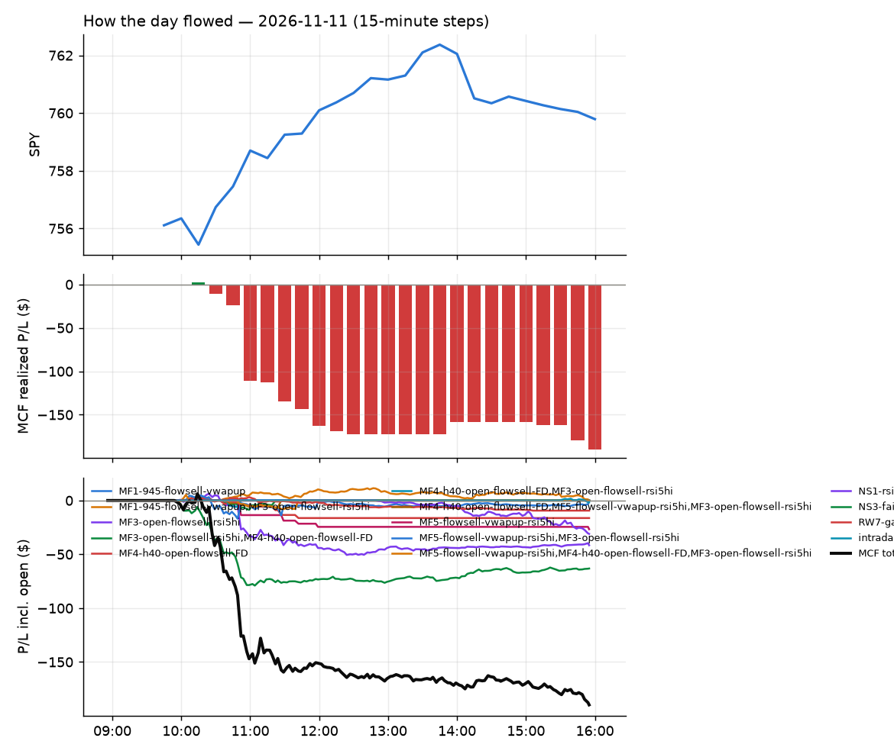
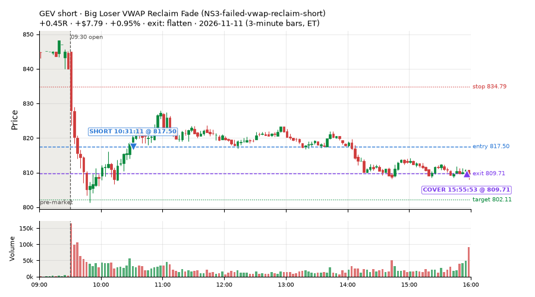
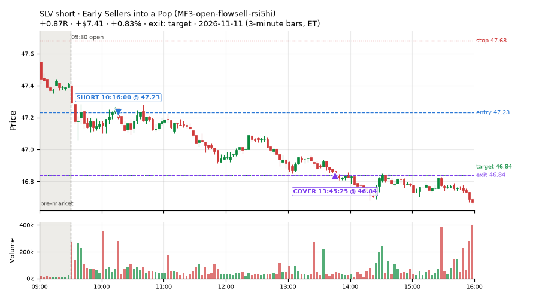
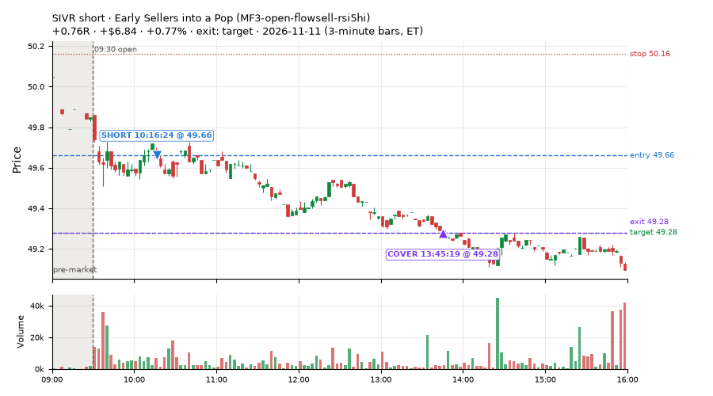
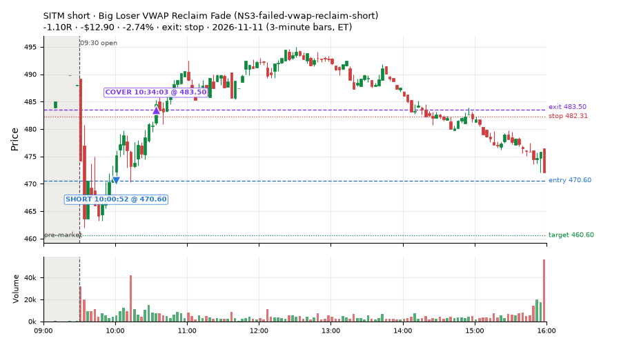
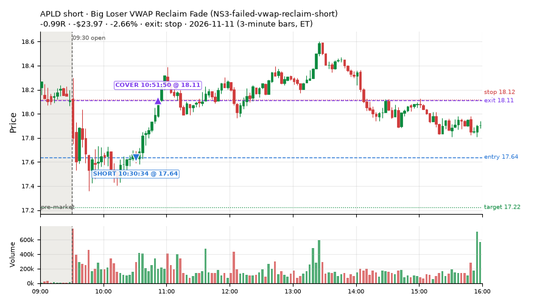
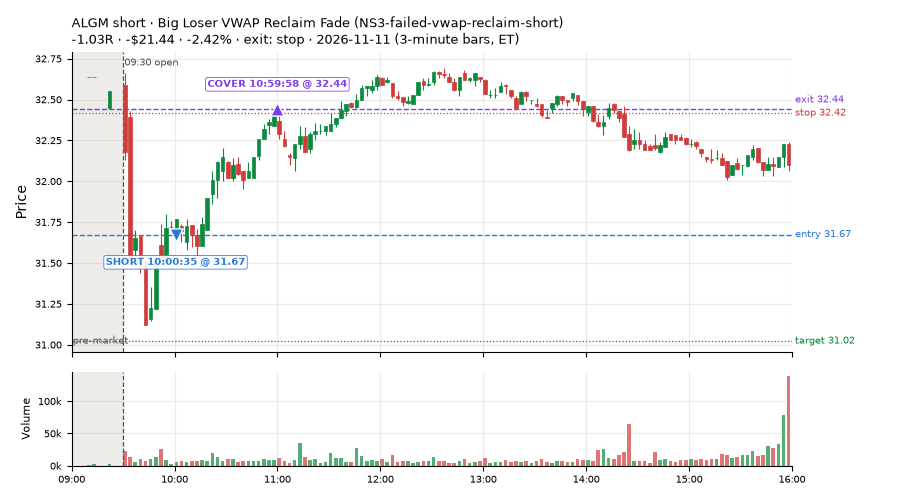
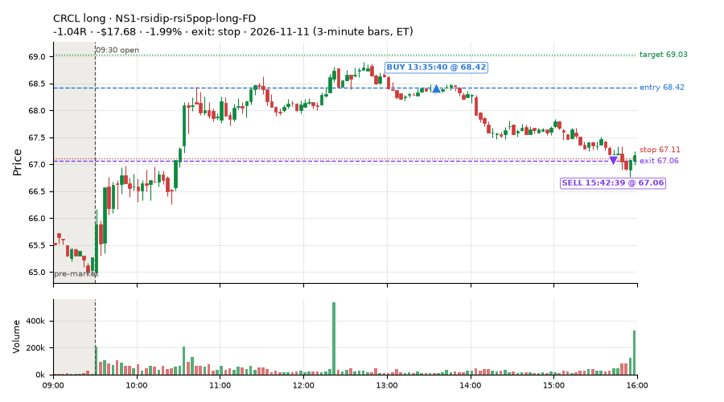
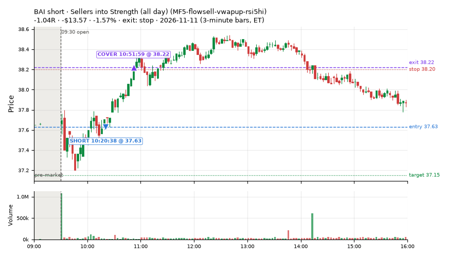

41 trades · win rate 15% · P/L $-189.80
PROBATION: no live setup has passed both locked test periods. 10 owner-directed setups added 2026-10-08 (MarcoFlow top 5 + 5 new), untested live. RW6G1 (RW6 + VWAP band guard) added 2026-10-09, probation.

| Symbol | Setup | Side | In | Out | Entry | Exit | Exit reason | % gained | P/L |
|---|---|---|---|---|---|---|---|---|---|
| GEV | Big Loser VWAP Reclaim Fade (NS3-failed-vwap-reclaim-short) | short | 10:31 | 15:55 | 817.50 | 809.71 | flatten | +0.95% | $7.79 |
| SLV | Early Sellers into a Pop (MF3-open-flowsell-rsi5hi) | short | 10:16 | 13:45 | 47.23 | 46.84 | target | +0.83% | $7.41 |
| SIVR | Early Sellers into a Pop (MF3-open-flowsell-rsi5hi) | short | 10:16 | 13:45 | 49.66 | 49.28 | target | +0.77% | $6.84 |
| Symbol | Setup | Side | In | Out | Entry | Exit | Exit reason | % lost | P/L |
|---|---|---|---|---|---|---|---|---|---|
| SITM | NS3-failed-vwap-reclaim-short | short | 10:00 | 10:34 | 470.60 | 483.50 | stop | -2.74% | $-12.90 |
| APLD | NS3-failed-vwap-reclaim-short | short | 10:30 | 10:51 | 17.64 | 18.11 | stop | -2.66% | $-23.97 |
| ALGM | NS3-failed-vwap-reclaim-short | short | 10:00 | 10:59 | 31.67 | 32.44 | stop | -2.42% | $-21.44 |
| CRCL | NS1-rsidip-rsi5pop-long-FD | long | 13:35 | 15:42 | 68.42 | 67.06 | stop | -1.99% | $-17.68 |
| BAI | MF5-flowsell-vwapup-rsi5hi | short | 10:20 | 10:51 | 37.63 | 38.22 | stop | -1.57% | $-13.57 |








Signal to fill: median 2s, 90th percentile 5s (41 trades). Bars close each minute; the order follows the bar close.
Best excursion (MFE): median 0.16R; worst (MAE) median 1.01R. 59% of trades never got +0.25R in our favour; 1 reached +1R and still closed at or below 0.
| Symbol | Setup | Best R | Worst R | Closed R |
|---|---|---|---|---|
| MSI | RW7-gapdn-bounce-early-short-FD | +0.96 | -1.05 | -1.05 |
| XOM | MF1-945-flowsell-vwapup | +1.62 | -0.15 | -0.00 |
| ITOT | MF3-open-flowsell-rsi5hi | +0.57 | -1.02 | -1.04 |
| IWB | MF3-open-flowsell-rsi5hi | +0.49 | -1.07 | -1.05 |
| IJR | MF5-flowsell-vwapup-rsi5hi | +0.84 | -0.80 | -0.61 |
| Entry time | Trades | Win | Avg R | P/L |
|---|---|---|---|---|
| 09:50-10:30 | 21 | 19% | -0.58 | $-89.77 |
| 10:30-11:30 | 14 | 7% | -0.92 | $-67.35 |
| 11:30-13:00 | 1 | 0% | -0.82 | $-7.79 |
| 13:00-14:00 | 1 | 0% | -1.04 | $-17.68 |
| 14:00-16:00 | 4 | 25% | -0.21 | $-7.21 |
| Setup | Trades | Win | Avg R | Adj R (net of SPY) | Avg R ex-market (all sessions) | P/L |
|---|---|---|---|---|---|---|
| Early Sellers Above VWAP (MF1-945-flowsell-vwapup) owner-directed; holdouts once: Sep-Oct +0.169R n86, Apr-Jun -0.050R n429 | 1.0 | 0% | -0.00 | +0.94 | -1.20 (beta +2.21, n 6) | $-0.01 |
| Early Sellers into a Pop (MF3-open-flowsell-rsi5hi) owner-directed; holdouts once: Sep-Oct -0.059R n170, Apr-Jun -0.034R n729 | 16.0 | 19% | -0.63 | +0.09 | -0.06 (beta -0.96, n 31) | $-41.56 |
| Early Sellers, Strong Heat (all day) (MF4-h40-open-flowsell-FD) | 6.0 | 17% | -0.76 | -0.09 | +0.02 (beta -1.88, n 38) | $-16.31 |
| Sellers into Strength (all day) (MF5-flowsell-vwapup-rsi5hi) owner-directed; holdouts once: Sep-Oct -0.001R n264, Apr-Jun -0.010R n1199 | 5.0 | 0% | -0.94 | -0.30 | -0.17 (beta -1.39, n 54) | $-26.67 |
| NS1-rsidip-rsi5pop-long-FD | 3.0 | 0% | -0.74 | -0.61 | -0.13 (beta +1.14, n 93) | $-30.99 |
| Big Loser VWAP Reclaim Fade (NS3-failed-vwap-reclaim-short) owner-directed; holdouts once: Sep-Oct +0.119R n65, Apr-Jun -0.136R n524 | 5.0 | 20% | -0.74 | -0.68 | -0.23 (beta -0.69, n 63) | $-63.17 |
| Gap-Down Early Bounce Short (all day) (RW7-gapdn-bounce-early-short-FD) | 2.0 | 0% | -1.03 | -0.38 | -0.09 (beta -1.17, n 495) | $-9.40 |
| Index Last-Half-Hour Momentum (intraday_momentum) failed Apr-Jun holdout: -0.091R/trade over 147 trades | 3.0 | 33% | -0.16 | -0.03 | -0.34 (beta +0.22, n 55) | $-1.69 |
Market direction (SPY, beta 1) accounted for $-109.65 of today's $-189.80; the rest ($-80.15) came from the setups themselves. Avg R net of SPY: -0.14 (incl. a hedge leg's cost; report only).
16 setups live today. Today: 239 signals, 41 taken, 0 lost because another setup held the symbol (0%). Since 2026-10-09 (24 sessions): 9638 signals, 3887 taken, 758 lost to other setups (8%). Peak open positions today 32 of 400 slots. Earnings blackout removed 928 symbols before scanning.
Simulated playing time (not live): 5416 what-if trades of signals not taken, avg -0.14R, 48% winners; of them 605 lost to another setup (avg +0.02R).
Silent: IDX1-qqq100-0955-TQQQ-trail, IDX1-qqq100-0955-TQQQ-hold, IDX2-spy075-0945-3x-trail, IDX3-spy075-0955-3x-trail, IDX5-spy050-0945-3x-trail · Crowded out: MF3-open-flowsell-rsi5hi, RW4-ns3-adv150-short-FD, RW4-ns3-adv150-short, NS3-failed-vwap-reclaim-short-FD · Starved: MF1-945-flowsell-vwapup, MF5-flowsell-vwapup-rsi5hi, exhaustion_short-FD, orb20_a, RW6G1-ns2-up3-vwap2sd-short, LIQ-pdl-sweep-open15-vwap-long, ST5-pdbrkup-short-mid-t05s1-FD, ST3-rsi5up-short-pm-t1s1-FD, NS2-sma50break-overbought-short, MF1-945-flowsell-vwapup-FD
| Prio | Setup | Today sig / taken | Sessions | Signals / taken / trades | Taken/day | Expected/day | Lost to other setups | Lost to (setup n) | Top skip reasons | SIMULATED: not-taken n / avg R / win | Verdict |
|---|---|---|---|---|---|---|---|---|---|---|---|
| 1 | Early Sellers Above VWAP MF1-945-flowsell-vwapup | 12 / 1 | 14 | 68 / 6 / 6 | 0.43 | 5.33 | 0 | – | split-tape short gate 27, other 18, spread / quote / size 16 | 62 / -0.03R / 24% | starved 0.43 entries/day vs ~5.33 expected |
| 2 | NS4-pm-vwap-reclaim-oversold-short-FD NS4-pm-vwap-reclaim-oversold-short-FD | 6 / 0 | 23 | 92 / 33 / 33 | 1.43 | 3.57 | 4 | L3-gap-slope-fromopen-FD 3, NS1-rsidip-rsi5pop-long-FD 1 | split-tape short gate 22, not shortable / shorts off 15, spread / quote / size 13 | 59 / +0.01R / 44% | slow 7.2 entries/week; ~8 weeks to 60 trades |
| 3 | Panic Flush Reversal (3x volume) CWT05-flush-m05-v3-long | 1 / 0 | 16 | 96 / 59 / 59 | 3.69 | – | 0 | – | spread / quote / size 20, other 15, daily loss cap 1 | 37 / -0.75R / 54% | ok 18.4 entries/week |
| 4 | L3-gap-slope-lowdist-FD L3-gap-slope-lowdist-FD | 2 / 0 | 23 | 375 / 73 / 73 | 3.17 | 9.76 | 8 | RW6-ns2-up3-short-FD 3, NS2-sma50break-overbought-short-FD 3, L3-gap-slope-rsi5hi-FD 3 | not shortable / shorts off 149, daily loss cap 72, split-tape short gate 50 | 293 / -0.12R / 48% | ok 15.9 entries/week |
| 5 | Gap-Down Rebound Overbought Short (all day) L3-gap-slope-rsi5hi-FD | 27 / 0 | 8 | 338 / 31 / 31 | 3.88 | 13.41 | 10 | L3-gap-slope-fromopen-FD 8, L3-gap-slope-lowdist-FD 4, RW6G1-ns2-up3-vwap2sd-short-FD 2 | not shortable / shorts off 151, daily loss cap 119, split-tape short gate 25 | 287 / -0.21R / 57% | ok 19.4 entries/week |
| 6 | NS1-rsidip-rsi5pop-long-FD NS1-rsidip-rsi5pop-long-FD | 4 / 3 | 23 | 132 / 93 / 93 | 4.04 | 5.39 | 5 | L3-gap-slope-fromopen-FD 5 | other 17, spread / quote / size 12, symbol held by another setup 5 | 39 / -0.08R / 64% | ok 20.2 entries/week |
| 7 | Early Sellers, Mid-High RSI (all day) MF2-open-rsimidhi-flowsell-FD | 3 / 0 | 8 | 46 / 23 / 23 | 2.88 | 10.09 | 6 | RW3-gapdn-rsi5pop-flowsell-short-FD 2, heat_fade_long 2, RW7-gapdn-bounce-early-short-FD 1 | spread / quote / size 7, symbol held by another setup 6, not shortable / shorts off 6 | 22 / +0.14R / 46% | slow 14.4 entries/week; ~4 weeks to 60 trades |
| 8 | Sellers into Strength (all day) MF5-flowsell-vwapup-rsi5hi | 17 / 5 | 18 | 135 / 54 / 54 | 3.00 | 15.47 | 13 | MF5-flowsell-vwapup-rsi5hi-FD 10, MF3-open-flowsell-rsi5hi 2, CWT12-coil-k6-long 1 | split-tape short gate 34, spread / quote / size 15, symbol held by another setup 13 | 80 / -0.28R / 39% | starved 3.00 entries/day vs ~15.47 expected |
| 9 | Early Sellers, Strong Heat (all day) MF4-h40-open-flowsell-FD | 25 / 6 | 8 | 99 / 38 / 38 | 4.75 | 16.45 | 24 | MF5-flowsell-vwapup-rsi5hi-FD 9, MF1-945-flowsell-vwapup-FD 6, RW3-gapdn-rsi5pop-flowsell-short-FD 6 | symbol held by another setup 24, split-tape short gate 16, not shortable / shorts off 11 | 58 / -0.12R / 55% | ok 23.8 entries/week |
| 10 | Big Loser VWAP Reclaim Fade NS3-failed-vwap-reclaim-short | 18 / 5 | 21 | 140 / 63 / 63 | 3.00 | 3.03 | 5 | LIQ-orl-sweep-open15-s25-long 3, heat_fade_short 1, heat_fade_short-FD 1 | spread / quote / size 29, not shortable / shorts off 24, split-tape short gate 16 | 69 / -0.20R / 39% | ok 15.0 entries/week |
| 11 | Early Sellers into a Pop MF3-open-flowsell-rsi5hi | 23 / 16 | 18 | 136 / 31 / 31 | 1.72 | 9.19 | 38 | MF3-open-flowsell-rsi5hi-FD 35, MF5-flowsell-vwapup-rsi5hi 13, MF5-flowsell-vwapup-rsi5hi-FD 7 | symbol held by another setup 38, split-tape short gate 38, spread / quote / size 15 | 105 / -0.42R / 33% | crowded-out 38 of 136 signals (28%) lost to setups already holding the symbol |
| 12 | Gap-Down Early Bounce Short (all day) RW7-gapdn-bounce-early-short-FD | 83 / 2 | 23 | 1076 / 495 / 495 | 21.52 | 59.92 | 38 | LIQ-orl-sweep-open15-s25-long 11, RW1-gapdn-bounce-flowsell-short-FD 9, MF2-open-rsimidhi-flowsell-FD 7 | split-tape short gate 195, daily loss cap 110, not shortable / shorts off 90 | 578 / +0.04R / 53% | ok 107.6 entries/week |
| 13 | Afternoon Blow-off Short exhaustion_short | 3 / 0 | 23 | 188 / 89 / 89 | 3.87 | 12.12 | 6 | L3-gap-slope-fromopen-FD 3, RW2-exhaustion-noon-adv150-short-FD 2, L3-gap-slope-rsi5hi-FD 1 | split-tape short gate 39, not shortable / shorts off 38, spread / quote / size 9 | 97 / +0.06R / 54% | ok 19.3 entries/week |
| 14 | exhaustion_short-FD exhaustion_short-FD | 10 / 0 | 23 | 279 / 86 / 86 | 3.74 | 64.64 | 37 | exhaustion_short 26, RW2-exhaustion-noon-adv150-short-FD 8, L3-gap-slope-fromopen-FD 5 | daily loss cap 53, split-tape short gate 50, not shortable / shorts off 41 | 185 / -0.24R / 40% | starved 3.74 entries/day vs ~64.64 expected |
| 15 | Index Last-Half-Hour Momentum intraday_momentum | 3 / 3 | 23 | 56 / 55 / 55 | 2.39 | 2.37 | 0 | – | daily loss cap 1 | 1 / -0.26R / 0% | slow 12.0 entries/week; ~5 weeks to 60 trades |
| 16 | 20-Minute Opening Range Breakout orb20_a | 2 / 0 | 23 | 91 / 31 / 31 | 1.35 | 6.79 | 0 | – | trigger missed between polls 28, spread / quote / size 11, not shortable / shorts off 7 | 54 / +0.06R / 52% | starved 1.35 entries/day vs ~6.79 expected |
Every trade is attached as a CSV you can open and edit in Excel or Google Sheets. Live page: https://misiti15.github.io/MCF/live/